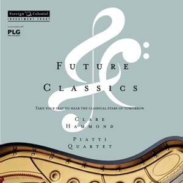

|  |
▸ Album Cover |
Listen to excerpts from Clare's second disc, made in collaboration with the Foreign & Colonial Investment Trust and the Park Lane Group, to promote a concert tour in spring 2012. Tracks include:
Debussy - 'Reflets dans l'eau' from Images, Book 1
Liszt - Les jeux d'eaux à la Villa d'Este